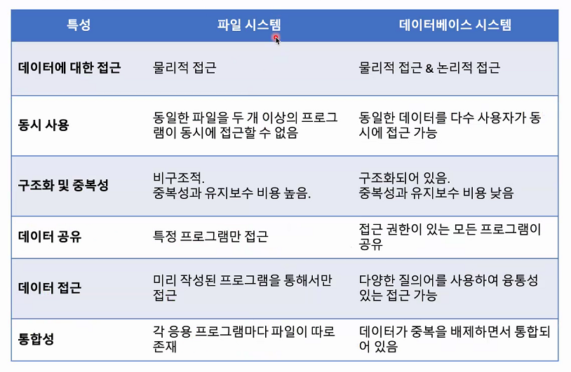
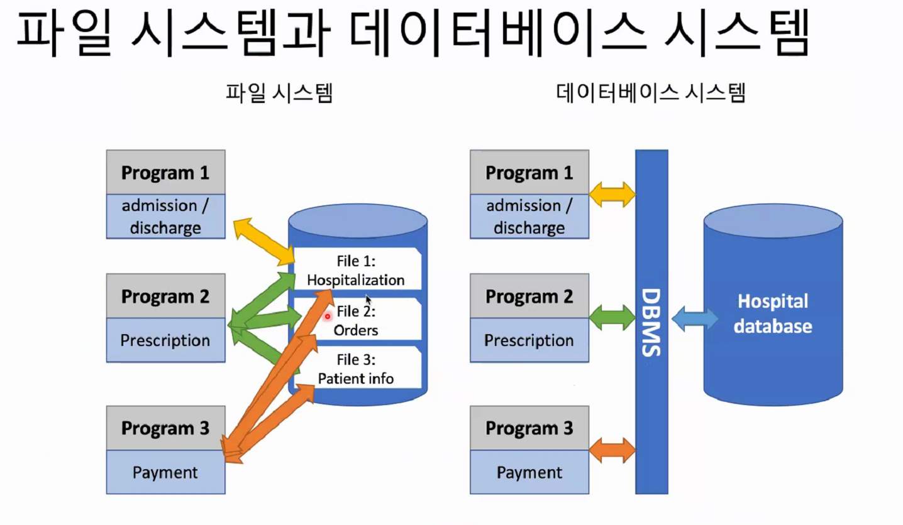
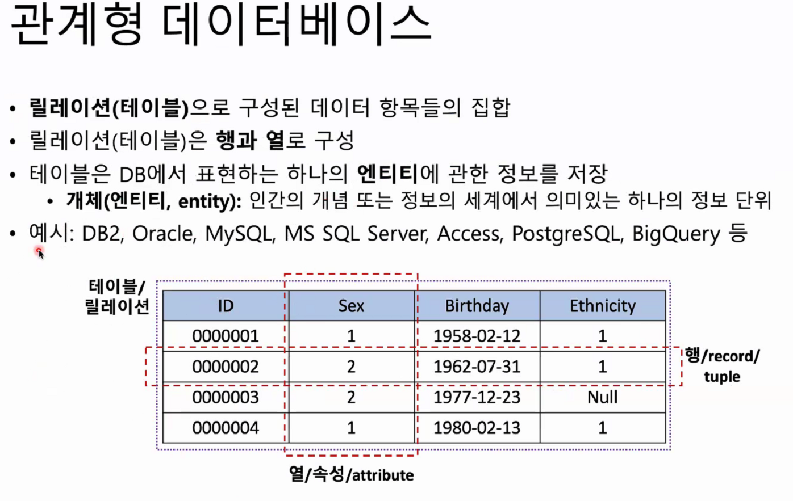
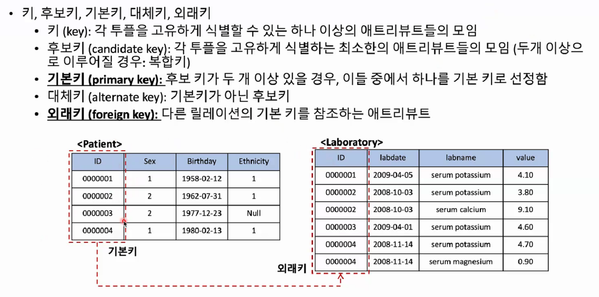
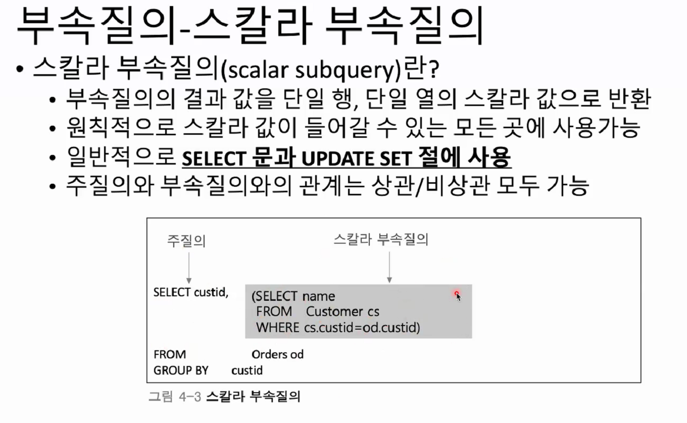

Chapter 7 DataBase in R
유승찬 (2021-03-31)
7.1 데이터 베이스와 데이터 베이스 시스템
데이터베이스 (DataBase)
- 데이터베이스
- 체계화된 데이터 모임
- 작성된 목록으로써 여러 응용 시스템들의 통합된 정보들을 저장하여 운영할 수 있는 공용 데이터 묶음
- 데이터베이스의 특징
- 실시간 접근성
- 지속적인 변화
- 동시 공유
- 내용에 의한 참조
- 데이터베이스의 개념
- 통합된 데이터(intergrated data)
- 다중 유저, 통합관리, 중복 최소화
- 저장
- 운용
- 시스템
- 통합된 데이터(intergrated data)
- 데이터베이스관리 시스템
- DBMS(DB management system)
- DBMS 기능
- 정의: 데이터에 대한 형식, 구조, 제약조건들을 명세
- 구축:DBMS가 관리하는 기억 장체 데이터를 저장
- 조작:질의, 갱신, 보고서
- 공유: 여러사람
- 보호
- 유지 보수
데이터베이시의 특성

db 1
파일 시스템과 데이터 베이스 시스템 차이 
| 데이터베이스 장점 |
|---|
| 중복과 불일치 감소 |
| 시스템 융통성 |
| 시스템 개발 및 유지 비용 감소 |
| 표준화 시행이 용이 |
| 보안이 향상됨 |
| 데이터 무결성이 향상됨 |
| 조직체의 요구 사항을 파악하여 조정 가능 |
| 시스템의 고장으로 데이터 베이스 복구 가능 |
| DB 공유와 업그레이드 쉬음 |
7.2 관계형 데이터 베이서
본 수업에서 주로 관계형 데이터 다룸 열/행 →

db 3
- 스키마
- 릴레이션의 기본적..
- 튜플
- 각각의 행
- 속성의 모임
- 속성
- 가장 작은 논리적 단위
- 도메인
대부분 key를 갖고 있다. rownumber()는 항상 변하니 key가 중요.
>유일하면서 null 이 없어야 primay key
>외래키: 다른 릴레이션의 기본 키를 참조하는 애트리뷰트

- 도메인 무결성 제약조건
- 개체 무결성 제약조건
- 참조 무결성 제약 조건
7.3 SQL (Structured Query Language)
IBM에서 개발 1972년부터 사용 세계 3대 coding language (1위 python, 2위 R, 3위 sql in kaggle) DataScience 할때 주로 상기 3개 언어를 사용한다고 함.
- 3 function
- 데이터 정의어
- 데이터 저장 구종, 데이터 접근 방법, 데이터 형식 등 데이터베이스를 구추갛거나 수정
- SCHEMA, DOMAIN, TABLE, VIEW, INDEX
- 데이터 조작어
- SELECT, INSERT, UPDATE ,DELETE
- 데이터 제어어
- commit, rollback, grant, revoke
- 데이터 정의어

sql example
sql cheat sheet 참조
SQL cheat sheet
sql 안에 sql

sql in sql
7.3.1 R and DBI
R에서 DB를 사용하기 위해서, DBI 를 설치하고 이후 Rposgres 등 DBMS 페키지를 사용함.

R and DB 1
실습 자료는 OMOP-CDM 자료를 사용